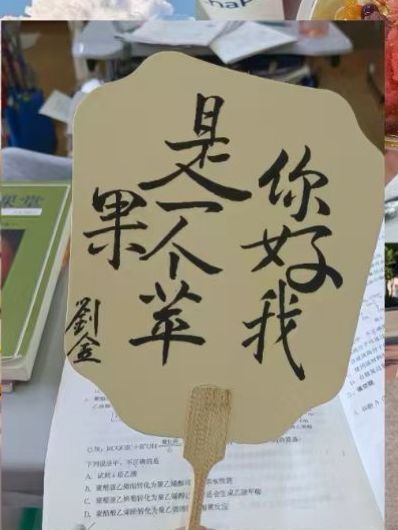
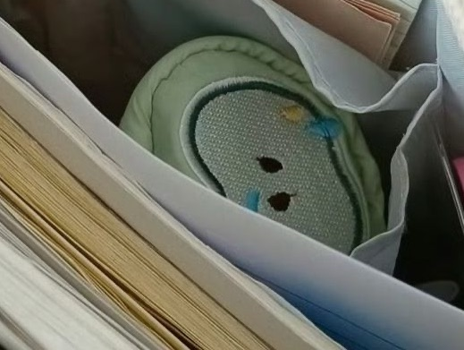
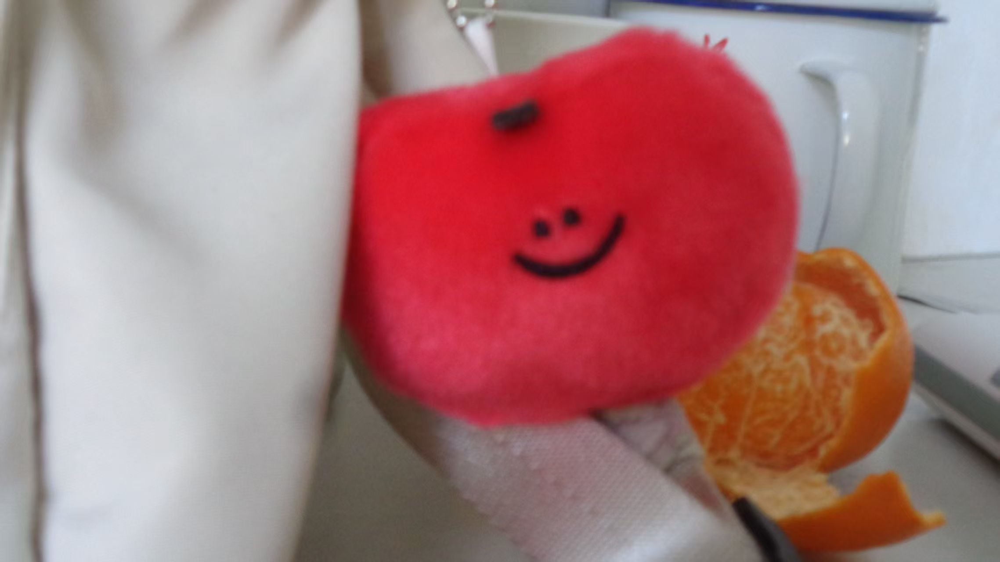
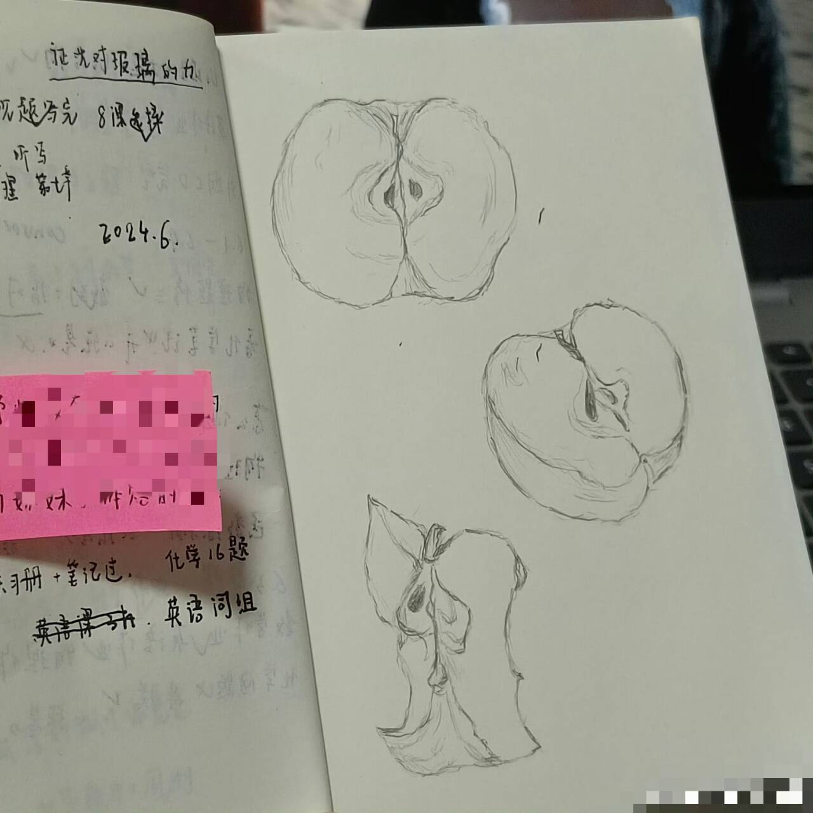
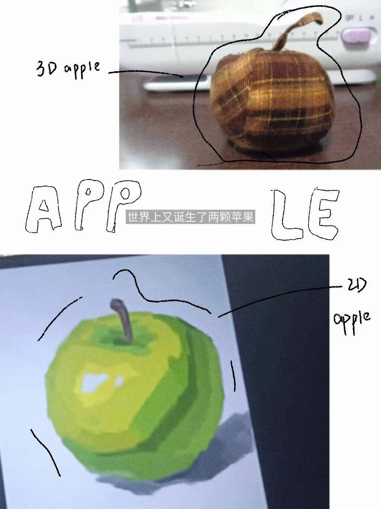

你好我是一个苹果
关于苹果
关于头像下方的名字：你好我是一个苹果
我喜欢苹果这个意象，不是作为一种食物，不是喜欢吃苹果，因为我喜欢吃所有水果。
我喜欢苹果的形象，我认为它是一种健康的水果。
红色的苹果像幸福的小孩，青色的苹果像幸福的年轻人，黄色的苹果像幸福的中年人。

有一次学校义卖活动，很多人都买了一种可以自己定义扇面内容的扇子。我定了这个，于是有了这个有点长的昵称
 
我有挂在书包上的苹果，有青苹果样子的笔袋
 